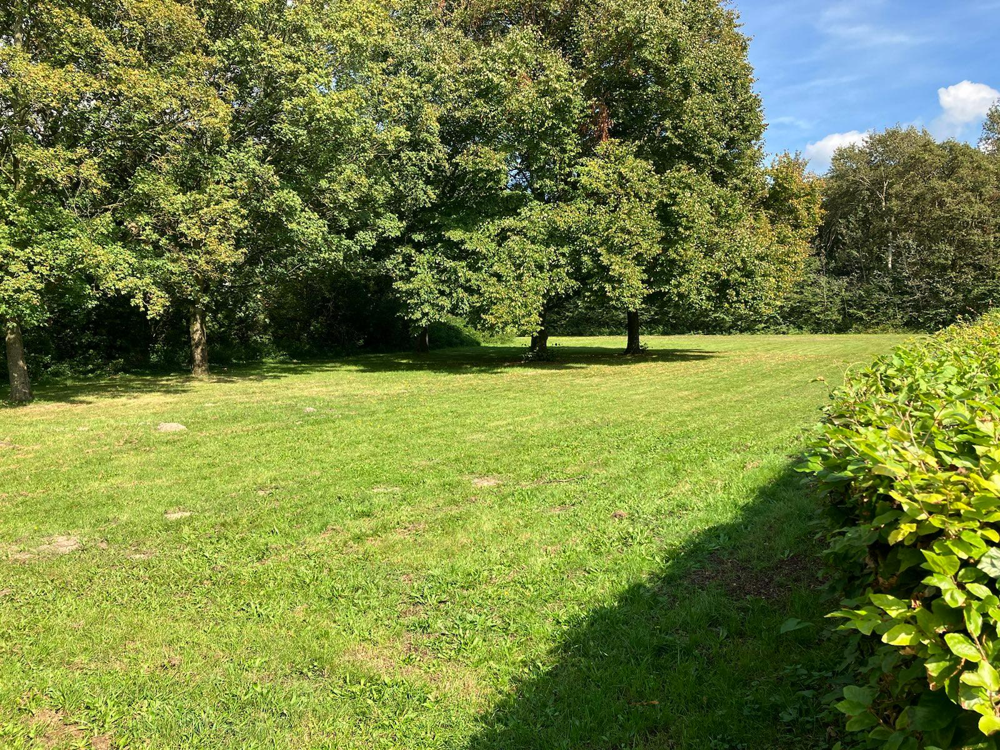
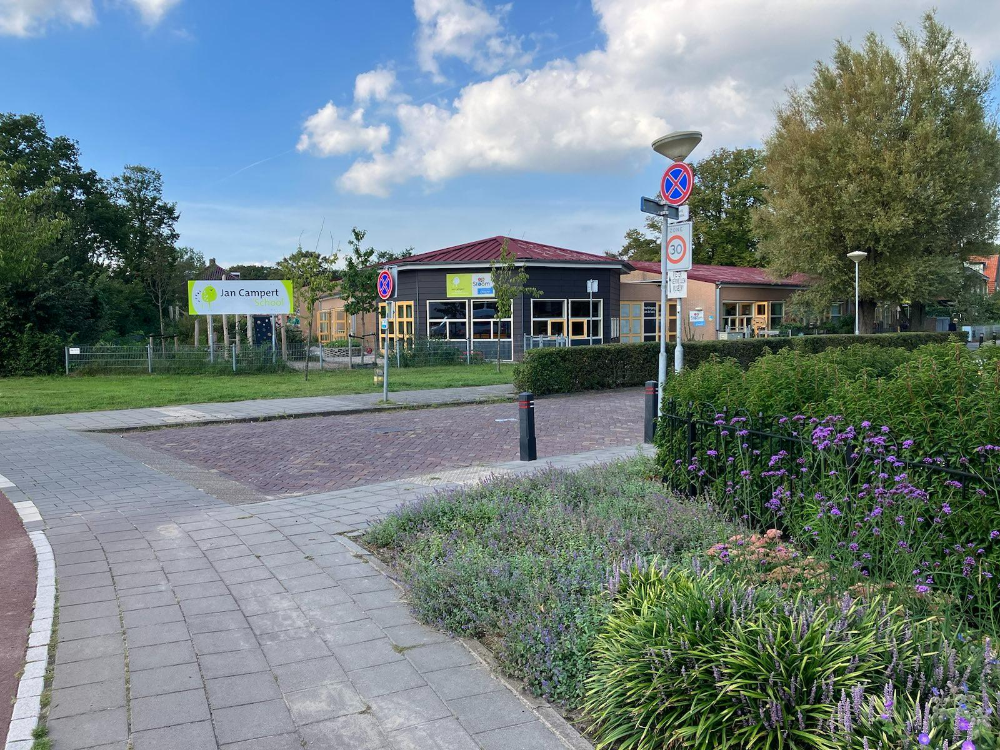
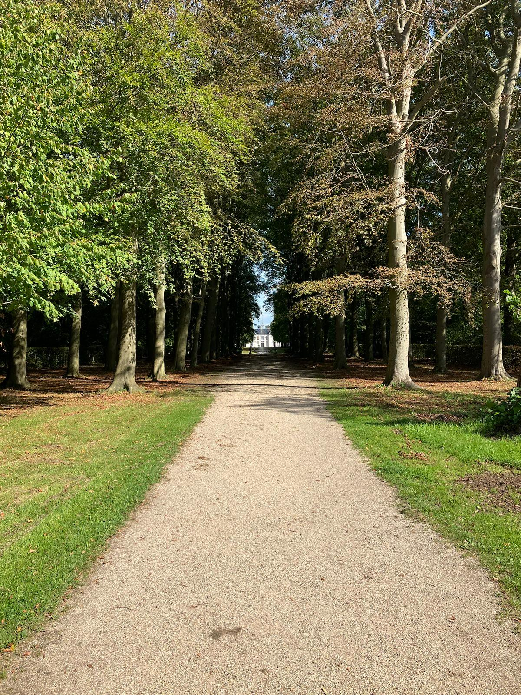

Wilt u meer informatie krijgen over sportverenigingen, zoals de voetbalclub of handschietboogvereniging, dan kunt u verder kijken bij het onderdeel Sport.

Wilt u meer informatie vinden over de speelplekken, zoals het skatepark of een speelplek, dan kunt u verder kijken bij het onderdeel Buitenspelen.
Welkom op de homepagina van leven in Driehuis. Hier kunt u informatie vinden over het leven in Driehuis en de activiteiten die uw kinderen, u zelf of u zelf met uw kinderen kunt ondernemen in de buurt. Denk hierbij aan sport, buitenspelen, onderwijs en natuur.

Wilt u meer te weten komen over het onderwijsaanbod in Driehuis, over de basisscholen en voortgezet scholen, dan kunt u verder kijken bij het onderdeel Onderwijs.

Wilt u meer lezen over de natuur en winkels, denk hierbij aan de Kennermer Duinen of Cafés, kijk dan bij het onderdeel natuur en winkels.